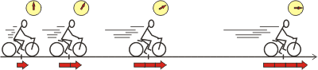
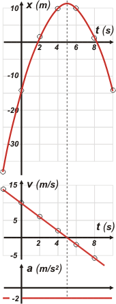

|
NO ME SALEN
APUNTES TEORICOS DE FÍSICA Y BIOFÍSICA DEL CBC
|
|

|
Movimiento rectilíneo uniformemente variado, MRUV
Se trata de un tipo de movimiento muy característico, que además de sencillo, aparece bastante seguido en la naturaleza. Su nombre lo caracteriza: la palabra rectilíneo indica que la trayectoria coincide con una recta; y la palabra variado alude a la velocidad, que ya no es constante... pero que varía uniformemente .
Ojo: la velocidad -ahora variable- ya no se puede homologar a la velocidad media. Mirá el esquema: en tiempos iguales, aumentos iguales de velocidad. Los desplazamientos ya no son iguales, dado que a mayor velocidad, tendremos mayores desplazamientos. |
|
|  |
|
|
| La flecha de abajo del ciclista representa la velocidad. Un gráfico velocidad-tiempo típico de un MRUV podría ser el siguiente: |
|
|
 |
Una recta oblicua bien puede representar un MRUV. Si la inclinación es como ésta la llamamos ascendente o creciente y decimos que se trata de un movimiento de aumento de velocidad; y a la inversa: descendente o decreciente, que se corresponde con disminuciones de la velocidad. Pero la inclinación nada nos informa sobre si el móvil avanza o retrocede.
Para saber si el móvil avanza o retrocede hay que prestar atención al signo de la velocidad (o sea, gráficamente: si está arriba o abajo del eje de los tiempos). |
|
|
|
Si la recta fuese horizontal representaría un móvil que no cambia la velocidad, y en ese caso se trataría de un MRU. Aunque parezca ridículo también lo incluimos dentro de los MRUV. La orientación prohibida es la vertical: indicaría que el móvil posee infinitas velocidades en un mismo instante.
Fijate que la recta no necesariamente pasa por la posición v = 0 en el instante t = 0. Como ves, la velocidad se comporta en el MRUV como la posición en el MRU. Seguro que hay una ecuación horaria (la llamamos segunda ecuación horaria) que describe cómo varía la velocidad a través del tiempo:
v = vo + a ( t – to )
v y t son las variables. Si no aparecen, fuiste; no hay ecuación horaria. El resto: vo , a y to , son constantes, o sea números. vo y to son una velocidad cualquiera que el móvil tenga y el instante en que la haya tenido (o sea, se corresponden entre sí). Y a es la magnitud que describe el cambio de velocidad y se llama aceleración. Justamente, la característica fundamental del MRUV es a = cte. Gracias a eso, podemos calcularla como una aceleración media, am.
|
|
las unidades de la aceleración son m/s²
o cualquier otra unidad de longitud sobre cualquier unidad de tiempo al cuadrado
|
| am |
= |
Δv12 |
= |
v2 – v1 |
|
|
|
| Δt12 |
t2 – t1 |
|
|
|
Lógicamente, el plato fuerte del MRUV es su primera ecuación horaria, que describe cuál es la posición del móvil en cualquier instante de tiempo. Es ésta:
x = xo + vo ( t – to ) + ½ a . ( t – to )²
x y t son las variables. Si no aparecen, fuiste, no hay ecuación horaria. El resto: xo , vo , a y to , son constantes, o sea números (con unidades). Con suerte te dan el valor de esas constantes. Si no te los dan, tal vez los puedas encontrar, o quizás los puedas decidir vos. ¡Pero no son variables, son constantes! Es decir, una vez que te los dan, o que los encontrás, o que los decidís, ya está, son constantes, no cambian, valen siempre lo mismo... cómo querés que te lo diga...
Te voy a presentar un ejemplo. Supongamos un MURV en el que
xo = 10 m , vo = 2 m/s , a = – 2 m/s² y to = 4 s
Sus ecuaciones horarias serían las siguientes:
x = 10 m + 2 m/s . ( t – 4 s ) – 1 m/s² . ( t – 4 s )²
v = 2 m/s – 2 m/s² . ( t – 4 s )
|
|
|
| t (s) |
x (m) |
v (m/s) |
| -2 |
–38 |
14 |
| 0 |
–14 |
10 |
| 2 |
2 |
6 |
| 4 |
10 |
2 |
| 6 |
10 |
–2 |
| 8 |
2 |
–6 |
|
Le voy a ir dando valores a t y obteniendo las posiciones y velocidades correspondientes a esos instantes. Y los voy volcando en la tabla. Por ejemplo donde dice t (en rojo) escribo –2 s, y hago la cuentita. La de posición me da – 38 m, (tuve que escribir –2 s dos veces) y la de velocidad 14 m/s. Y así.
Vos podrías agregarles más preguntas a esas ecuaciones... por ejemplo para instantes impares. |
|
|
|
También voy volcando los valores encontrados a sendos gráficos posición-tiempo y velocidad-tiempo. |
|
|
|  |
Los puntos volcados en la gráfica de posición parecen encajar bastante bien en una curva conocida con el nombre de parábola. Efectivamente, la gráfica de una ecuación cuadrática -como la primera ecuación horaria- se representa con una parábola.
Toda parábola tiene un eje de simetría vertical que pasa por su vértice. En ese punto la inclinación de la parábola es nula: no va para arriba ni para abajo, está horizontal. Eso concuerda perfectamente con la idea de velocidad que nos daba la inclinación -pendiente- de la curva.
Veamos cómo coincide esta información de la rapidez dada por la inclinación, con la información de velocidad que nos brinda el gráfico de velocidades. La velocidad del móvil parece hacerse nula en el instante 5 s, el mismo instante en que tenemos el vértice de la parábola.
Ahora prestale atención a los instantes 0 s y 2 s. La velocidad disminuye (pasa de 10 a 6 m/s) y el móvil avanza (cada vez más lento) desde – 14 hasta 2 m.
Y a hora prestale atención a los instantes 6 s y 8 s. La velocidad disminuye (pasa de – 2 a –6 m/s... aumenta la rapidez, pero disminuye la velocidad) y el móvil retrocede (cada vez más rápido) desde 10 hasta 2 m.
Vayamos resumiendo: |
|
|
habrás notado que 4s no era el inicio del movimiento... ni tampoco lo era 0s |
Si la aceleración es positiva la velocidad (no la rapidez) aumentará siempre y en forma constante. La gráfica de posición será una parábola de concavidad positiva (sonriente).
Si la aceleración es negativa (como en nuestro ejemplo) la velocidad (no la rapidez) disminuirá siempre y en forma constante. La gráfica de posición será una parábola de concavidad negativa (triste). |
|
rapidez es el módulo de la velocidad
(la cantidad sola, sin el signo) |
CHISMES IMPORTANTES: |
|
|
- Para hallar el modelo de ecuación horaria (1ra.) del MRUV es necesario hacer uso del concepto de integración, del análisis matemático. Sin embargo suelen encontrarse en los libros de texto del secundario desarrollos de tipo geométrico que pueden llegar a conformarte.
- En el lenguaje coloquial se le dice movimiento acelerado a todo aquel en el que aumenta la rapidez, y también se le dice movimiento desacelerado a todo aquel en el que disminuye la rapidez.
- Leete esta perla: "Podemos, en consecuencia, admitir la siguiente definición del movimiento del cual hemos de tratar: llamo movimiento igualmente, o lo que es lo mismo, uniformemente acelerado a aquel que, partiendo del reposo, adquiere en tiempos iguales iguales incrementos de velocidad". Galileo Galilei, Dos nuevas ciencias.
|
|
|
| PREGUNTAS CAPCIOSAS: |
|
 |
- ¿Cuál es el MRUV más famoso?
- ¿Puede un cuerpo arrancar desde el reposo e ir cada vez más rápido con una aceleración negativa? (Ojo, que la respuesta es SÍ).
- Posición, velocidad y aceleración (en ese orden) tienen una relación de parentesco matemático... ¿sabés cuál es?
|
|
| |
|
| Me embola escribir m/s (metro sobre segundo) de esa forma, con la raya oblicua. Lo correcto es escribir la m justo arriba de la s y con la raya horizontal. Lo mismo con ½. (Más información sobre esta cuestión aquí). |
|
| | |
|
| Algunos derechos reservados.
Se permite su reproducción citando la fuente. Última actualización may-09. Buenos Aires, Argentina. |
|
|
 |
| | |
|
|
|